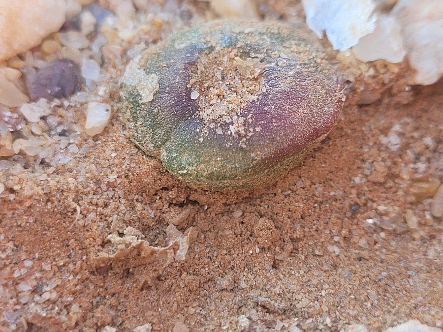

多肉植物 · 植物界
灯泡肉锥 Conophytum burgeri

番杏科肉锥花属小型多肉，球状叶半透明如灯泡，秋季从裂缝中开花，原产南非纳马夸兰，是稀有的珍品多肉。
- 分类
- 门被子植物门纲木兰纲目石竹目科番杏科属肉锥花属
- 栖息环境
- 南非纳马夸兰的干旱石英砾石地，喜光、耐旱
- 地理分布
- 原产南非北开普省，世界各地多肉爱好者盆栽栽培
- 保护级别
- 暂无评估
物种志
灯泡肉锥为番杏科肉锥花属小型多肉植物，植株由一对融合的肉质叶组成，球形，高 2–3 厘米，直径 2–3 厘米，表面光滑、呈半透明的淡绿色，形似小灯泡。花自顶部裂缝抽出，粉色或白色，花期秋季；果实为蒴果。
灯泡肉锥原产南非北开普省纳马夸兰的干旱地区，生于石英砾石地，长期演化出半透明的球状叶以减少水分蒸发，顶部的窗面可让光线进入叶肉进行光合作用。它每年蜕皮一次，新叶从旧叶内部长出，蜕皮期需要断水。灯泡肉锥是肉锥花属中的珍稀种类，栽培需用颗粒土、严格控水并保持充足光照，繁殖以播种为主，幼苗期需精细管理，生长十分缓慢，需要耐心。
形态与习性
- 株高球形，高 2–3 厘米，直径 2–3 厘米
- 花期秋季，花粉或白色
- 果期花后结蒴果
- 光照喜充足阳光，光照不足易徒长
- 水分严格控水，蜕皮期停水
- 土壤颗粒为主、排水良好的石英质土
- 繁殖以播种为主
- 主要用途多肉收藏、小型盆栽
趣味知识
- 灯泡肉锥的球状叶半透明，形似小灯泡，因此得名。
- 它每年蜕皮一次，新叶从旧叶内部长出，蜕皮期需要断水。
- 原产南非纳马夸兰的石英砾石地，拟态石块可躲避食草动物。
- 灯泡肉锥生长缓慢，是肉锥花属中的珍稀种类。